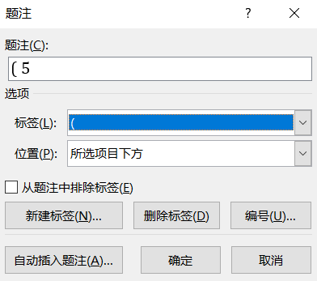

字体
LaTeX 字体
一些名词解释
PostScript (PS): Adobe公司开发的一种图灵完备的编程语言，目的是使用数学化的方式来描述几何图形和图片。
Portable Document Format: 也有Adobe公司开发，属于PostScript的子集。pdf不是一种编程语言，因为其缺乏PostScript语言的条件分支能力。Pdf对编号和超链接的支持很好，主要用于文件组合与分享。
Type 1 fonts: 矢量字体
Type 3 fonts: bitmap位图字体
Computer Modern (CM) fonts: Computer Modern 字体，由高德纳设计。它的一大优点是拥有非常完备的数学符号集。该字体是使用METAFONT语言（也是Knuth开发的）创建的。
不幸的是，METAFONT从未在打印机中广泛使用（不像PostScript那样）。所以在使用dvips生成PostScript时，Computer Modern字体的栅格化（从METAFONT转换为Type 3 bitmap）通常是较旧的（pre-teTEX 2.0）LATEX系统的默认行为。当LATEX系统使用此类Type 3字体时，生成的PostScript（或PDF）文件将不会总是在每台打印机上产生最佳质量，因为栅格化（rasterization）过程仅对于给定的打印分辨率才是最佳的。
CM-Super fonts: 2001年由Vladimir Volovich公开发布，它拓展了 Computer Modern 字体集并且完全使用type 1字体。CM-Super字体集支持一些原先Computer Modern中不支持的字体和字形（如bold smallcaps字形，见下图）。当使用T1编码想去获取拓展字形的时候，需要引入以下两行以获取Type 1版本的CM字体：1
2\usepackage{type1ec}
\usepackage[T1]{fontenc}

字体编码
传统使用 fontenc 宏包来切换字体编码，默认的是高德纳设计的 Computer Modern 字体(OT1)。
xelatex 和 lualatex 使用 fontspec 宏包满足用户设置字体的需求，支持直接调用系统和Texlive中的.ttf或.otf格式字体。
常用字体编码集
OT1: TeX text
T1: TeX extended text
cmr: Computer Modern Roman
cmss: Computer Modern Sans
cmtt: Computer Modern Typewriter
ptm: Adobe Times
phv: Adobe Helvetica
pcr: Adobe Courier
公式
数学公式是 LaTeX 的强项。在数学公式中，一般变量都是斜体，只有函数是正体。而在 LaTeX 中自动就会用斜体表示。在 Word 中，可以给变量设置斜体，但是之后在统一调整格式的时候会被统一调整，所以 Word 对于数学变量使用 MathType 或自带公式模式。
公式右编号
Word 自带公式
新建题注标签为公式左括号（
使用添加题注的方式增加序号，然后补全右括号）

在公式结束位置添加井号#，然后将序号 Ctrl+X Ctrl+V 到公式的#后，回车即可。
之后的序号变动 Word 会自动更新。
MathType
MathType 有自动插入标号的能力，不过关于标号右对齐，则需要手动设置段落的制表位来实现。
算法
Word
Word中通过表格来实现，在表格中设置制表位来控制缩进
在表格中移动到下一制表位与正文中按键稍有不同，正文中是按 Tab 即可，表格中需要 Ctrl + Tab
参考文献
Word
Word 推荐采用参考文献编为列表，然后文中使用交叉引用。
一份（不太）简短的LaTeX指南 p.63： http://ctan.math.utah.edu/ctan/tex-archive/info/lshort/chinese/lshort-zh-cn.pdf
LaTeX 2e font selection: https://www.latex-project.org/help/documentation/fntguide.pdf
http://ctan.mirrors.hoobly.com/macros/latex/contrib/IEEEtran/testflow/testflow_doc.pdf